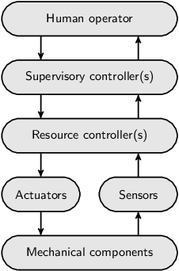
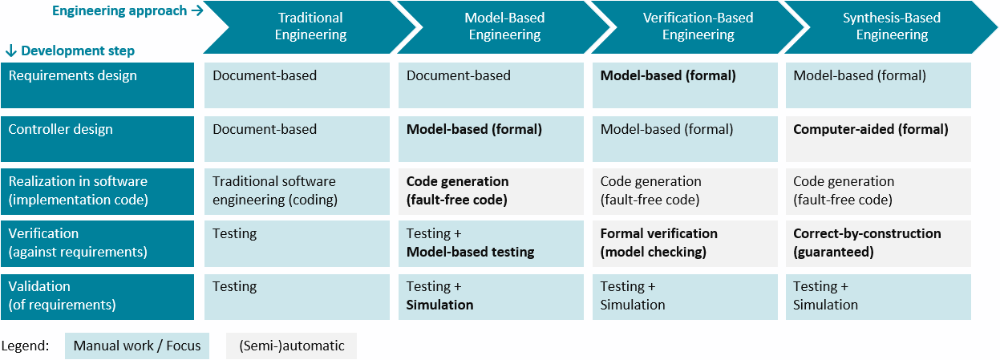
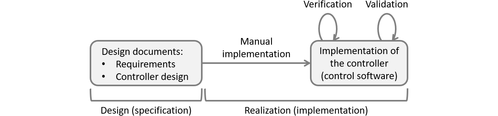
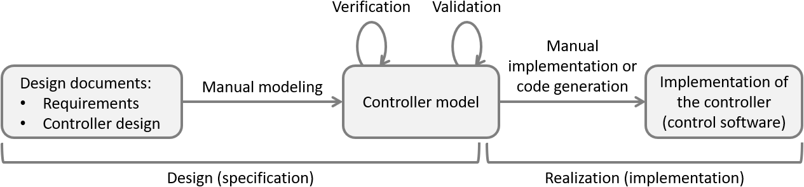
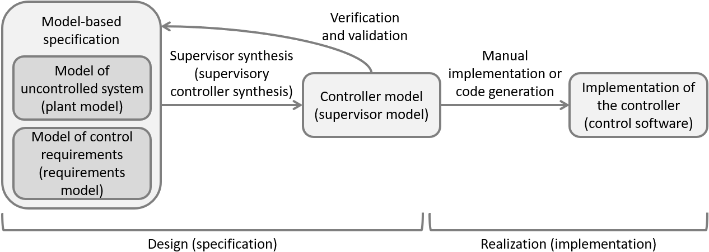

Module 1.1: Supervisory control
Automated systems are all around us. For instance, hospitals use X-ray and MRI systems, industrial printers print books and magazines, lithography systems are essential for the production of computer chips, and waterway locks bring ships from one water level to another. In today's digital age, all these systems contain software that controls their operation, to ensure they operate correctly and safely. Such systems are often called cyber-physical systems, for the physical part that consists of the hardware components being controlled, and the cyber part that contains the software that controls those physical parts.
Today's cyber-physical systems are often highly complex. To manage their complexity, they are typically step-by-step divided into sub-systems, sub-sub-systems, etc, each with their own responsibility. This way, at the most subdivided level, components are obtained that are small enough to be developed, tested and maintained in isolation. The components are often divided over several layers, to form a layered system architecture.
The control of a system can similarly be subdivided and layered. The following figure shows a traditional view on the control structure of a system:
At the bottom are the mechanical components, such as motors, switches, levers and valves. Their operation can be steered through actuators and their state of operation and changes therein can be observed through sensors. Resource controllers provide a first level of control. They may for instance correct for sensor jitter, translate continuous signals to discrete ones, or detect and even correct anomalous situations.
A supervisory controller provides higher-level control. It is typically responsible for the correct and safe behavior of a (sub-)system. For instance, it could be responsible for preventing damage to mechanical components or human operators. It may prevent collisions with or among mechanical components, or prevent mechanical components from overheating. The supervisory controller decides when actuators may be turned on or off, thus preventing such unsafe or undesired behavior. A supervisory controller is often simply called a controller or a supervisor, although there is a subtle difference between these two terms, as we will see later during the course.
A supervisory controller could control a single sub-system, coordinating one or more resource controllers. However, in case of a layered architecture, it could also coordinate multiple supervisory controllers of a lower layer. Supervisory controllers can thus be found at various levels of a system architecture.
Some systems are fully automated, without the need for human intervention or control. However, most systems provide some kind of human-machine interface that allows a human operator to monitor the system and if necessary control its operation.
Regardless of the exact system architecture, and whether human intervention is possible or not, supervisory controllers play an essential role in the safe control of all kinds of cyber-physical systems, and can be found at various levels within such systems. All parts of the system, so everything but the supervisory controller, is called the uncontrolled system. For a lower-level controller, this includes the mechanical components, actuators, sensors, and resource controllers. For a higher-level controller, it also includes the lower-level controllers. The uncontrolled system is traditionally often called the plant, meaning industrial equipment like machines and factories, not meaning plants and trees that grow from the earth.
In an uncontrolled system, a system without a supervisory controller that controls it, dangerous situations may occur in the system. For example, when an operator of an unsupervised water lock presses the close gate button while a vessel is passing through, the doors of the water lock may collide with the vessel. Or, when an operator opens one gate while the other gate is not closed yet, a flood is induced. However, not only human operators can make mistakes. If a system is controlled by some other system, that controlling system could also make the wrong choices, have bugs in its software, or otherwise send wrong instructions to the system being controlled. And even fully automated systems could run into problems, for instance due to products getting stuck, or physical parts breaking down.
The supervisory controller is present to prevent this kind of undesired and unsafe behavior. This includes damage to the system itself, as well as the people, equipment and other systems that operate with it. When a vessel is passing the opened gate, the supervisory controller will disable closing of the gate, even when the operator presses the button to close the gate. Or it will disable opening the gate when the opposite gate is currently open. Both 'an opened gate must not close while a vessel is passing through' and 'a gate must not open when the opposite gate is open' are examples of safety requirements. The disabling of the gate opening when the opposite gate is already open and the disabling of closing the bridge when a vessel is passing through, are how these requirements can be met. Dangerous situations like these show that it is important for the correct and safe operation of the system that supervisory controllers disable all undesired behavior.
Engineering supervisory controllers
Supervisory controllers can be developed in various ways. The following figure gives an overview. It shows multiple approaches to design and engineer supervisory controllers, as well as how these approaches relate to each other:
The columns indicate various engineering approaches. From left to right, they employ progressively more automation and computer assistance. The rows of the table indicate typical steps involved in the development of supervisory controllers. The cells indicate for each approach what is involved in the particular step. The green colored cells indicate that the step involves mostly, or at least significant, manual work for the particular engineering approach. Contrarily, the gray colored cells indicate that the step is (mostly) automated for that approach. As the steps with more manual work generally require the most engineering effort, the green cells also indicate where the engineering focus is for a particular approach. Bold texts in cells indicate changes compared to the previous column.
Typical steps involved in the development of supervisory controllers, as represented by the rows from top to bottom, are:
- Requirements design focuses on what a controller for a (sub-)system must do. Functional and safety requirements may be specified, for instance requiring that pushing an emergency button stops all motors. Extra-functional requirements may also be specified, for instance requiring that a certain throughput should be achieved.
- Controller design focuses on how a controller should satisfy the requirements to efficiently and safely control the system. For instance, the various control states of the system may be specified, as well as how the controller reacts to changing sensor or other input signals by controlling actuators, e.g., enabling a motor.
- Controllers may be realized in software. The software source code may for instance be implemented using Java, C or PLC programming languages.
- Verification involves checking the realized controller against its requirements design and controller design, to ensure that the controller is correctly realized. The system, controlled by the controller, should behave as designed.
- Validation involves checking the realized controller and its design, to ensure that the right controller is made. That is, the requirements must be correct and complete, such that the controller ensures that the system operates safely and efficiently in all circumstances.
Typically, the various engineering approaches as represented by the columns from left to right, can be characterized as follows:
-
Traditional engineering is document-based. Requirements are written down informally in large requirement documents. They are used as input for controller design documents. The documents are then handed over to a different person, team or supplier, for the implementation. Implementation of the controller in software is done through manual coding. Verification and validation involve testing on the implementation. Traditionally, all five steps are performed manually, which is laborious and error-prone. The information documents often lead to ambiguous, incomplete and inconsistent requirements, which carry over to the design and realization.
 -
Model-based engineering or model-driven engineering automates the realization step, and provides computer assistance especially for the verification and validation steps. It places models at the center of attention. The controller is modeled in a formal way, allowing a computer to interpret and analyze its behavior. That is, it is specified in a mathematically unambiguous way, for instance using state machines. Such models are considered the single source of truth. From them, all kinds of artifacts can be generated automatically, including the software code of the controller's implementation. This ensures that the code is fault-free and behaves consistently with the behavior as expressed by the controller model. The models can also be used to partly automate verification, for instance through the use of model-based testing. Simulation models can be used to simulate the (controlled) system behavior and validate the requirements during early phases of development.
 -
Verification-based engineering is a form of model-based engineering with computer-assistance to automate the verification step. It uses formal verification, or model checking, a mathematical technique that can automatically check the controller model against its requirements. To employ formal verification, both the controller model and the requirements must be formally specified. Formal verification then either indicates that the specified requirements are guaranteed to be satisfied by the controller model, or it provides counter examples that indicate in which situations they are not satisfied. This is exhaustive, as it considers every conceivable scenario, unlike testing, which typically covers only a limited number of scenarios. Through formal verification, the controller model can be iteratively adapted to satisfy all specified requirements in every possible situation.

-
Synthesis-based engineering is a form of model-based engineering with computer-assistance to automate the design of the controller. It uses supervisory controller synthesis to automatically synthesize a controller model from requirements (the requirements model) and a simple model of the to-be-controlled system (the plant model). This mathematical technique guarantees that the synthesized controller model satisfies all specified requirements. This makes verification of the controller model against the specified requirements superfluous, as the synthesized controller model is guaranteed correct-by-construction. With the controller design, realization and verification either to a large degree being automated or unnecessary, the focus shifts to requirements design and validation. This allows engineers to focus on what the controller should do, rather than how it should achieve it.

The use of model-based engineering combined with computer-aided design, through formal methods like formal verification and supervisory controller synthesis, has many advantages. It allows to produce unambiguous, complete, consistent, and up-to-date specifications, leading to higher quality controllers at similar or even lower effort and costs. This holds especially for larger and more complex systems, where it is more difficult to consider all the situations that may occur, and how they impact the requirements. And one has to consider corner cases, like when a vessel enters a water lock exactly when the operator pushes a button to close the gate. The more complex the system, and the more requirements are to be satisfied, the more complex the design and implementation of a correct supervisory controller becomes. For larger systems, on top of that, often multiple teams work on the system, and part of the work may be outsourced to suppliers. The greater the complexity, the more helpful synthesis-based engineering becomes as well. The goal of this course is to understand the synthesis-based engineering approach, and to be able to engineer supervisory controllers in practice using CIF.